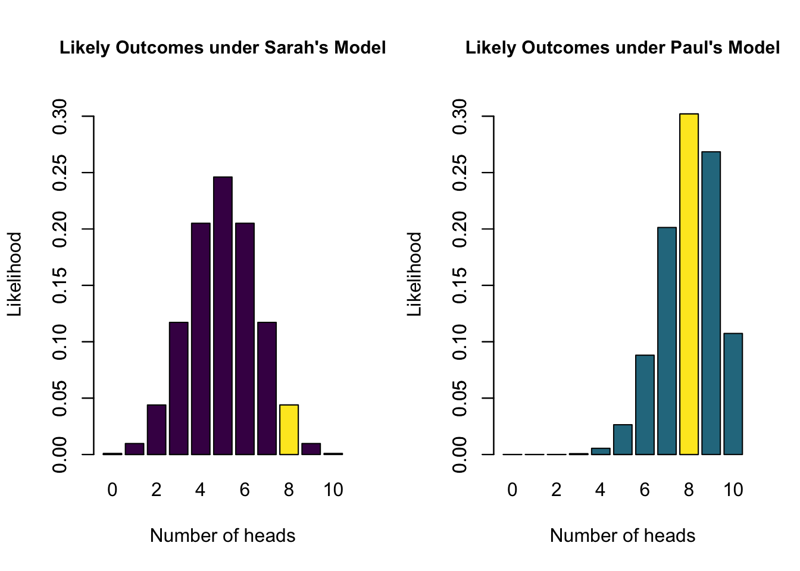
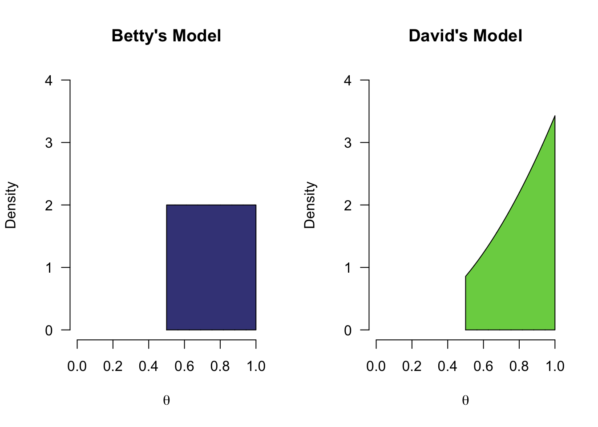
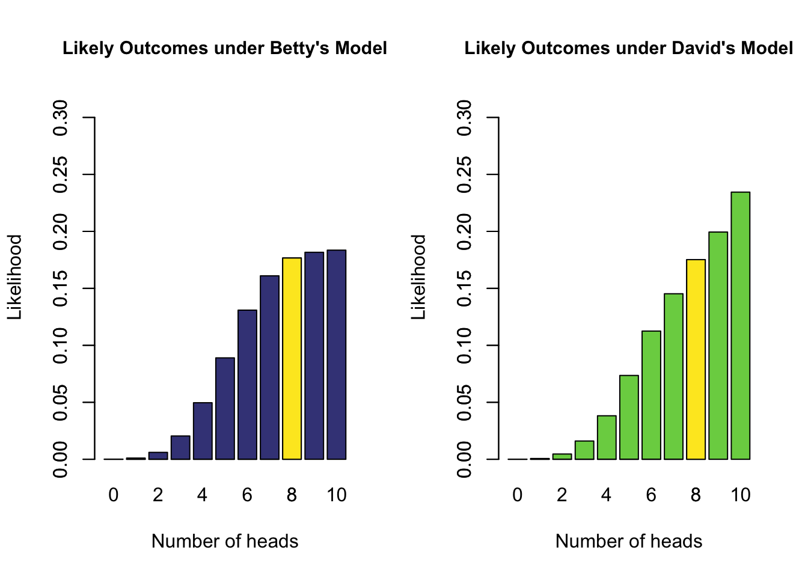

2 What is a Model?
Before we dive into the analysis of the beer tasting experiment, we need to define some key components. First of all, the concept of a statistical model. A statistical model is a combination of a general statistical model (e.g., the binomial model) and a statement about a parameter value that describe a certain phenomenon. For instance, we can model the flipping of a fair coin with the binomial model, where the probability parameter \(\theta\) (“theta”) is set to \(0.5\). Or, we can model the height of Dutch men (in cm) with a normal model, where the location parameter \(\mu = 183\) and the dispersion parameter \(\sigma = 5\). A statistical model can therefore also be seen as a hypothesis: a specific statement about the value of the model parameters.
2.1 Models Make Predictions
An essential property of a statistical model is that it can make predictions about the real world. We can use the accuracy of these predictions to gauge the quality/plausibility of a model, relative to another model. For instance, Sarah thinks that the probability of heads in a coin flip is 50% (i.e., \(H_S: \theta = 0.5\)), while Paul claims that the coin has been tampered with, and that the probability of heads is 80% (i.e., \(H_P: \theta = 0.8\)). Here, Sarah and Paul postulate different models/hypotheses. They are both binomial models, which is the general statistical model for describing a series of chance-based events with a binary outcome (e.g., coin flip, red/black in roulette, whether a random person from the population has a certain disease or not, or someone identifying the alcholic beer). Where Sarah and Paul differ, however, is their claim about the specific value of the \(\theta\) parameter. In the remainder of this text, we will be referring to model to mean such a combination of general statistical model, and claim about the value of the model parameter (i.e., hypothesis).
The two models make a different claim about \(\theta\), and therefore also make different predictions about the outcome of a series of 10 coin flips. Specifically, we can use the binomial model to calculate how likely each possible outcome is under each of the models. For instance, we can calculate how likely it is to observe 8 heads out of 10 flips. The binomial formula is as follows: \[\begin{align} \label{binomFormula} P(\text{data} \mid \theta) = \frac{n!}{k! (n-k)!} \theta^k\left(1-\theta\right)^{n-k}, \end{align}\] which, if we fill in the outcome for which we want to know the likelihood (i.e., \(k=8\) heads out of \(n=10\) flips), becomes: \[\begin{equation} P(\text{8 heads out of 10} \mid \theta) = \frac{10!}{8! (10-8)!} \theta^8\left(1-\theta\right){10-8}. \end{equation}\] The last element to fill in is \(\theta\). If we do so for Sarah, who postulates \(\theta = 0.5\), we get 0.0439. For Paul, who postulates \(\theta = 0.8\), we get 0.302. If we do this for every possible outcome, and create a bar graph of each likelihood, we get the following two figures that illustrate what each model deems likely (the yellow bar indicates each models’ likelihood of the example of 8 heads out of 10 flips):

These two figures reflect likely outcomes of the experiment of flipping a coin 10 times. If Sarah is correct, and the probability of heads is in fact \(0.5\), likely outcomes are 4, 5, and 6. However, if Paul is correct, and \(\theta = 0.8\), it is more likely to see 7, 8 or 9 heads.
2.2 Model Comparison
In the previous section we have made concrete what each of the two models predict. The models differ in their statement about \(\theta\) (Figure 2.1), and therefore differ in what they deem likely outcomes (Figure 2.2). Now imagine that we actually gather some data by flipping a coin 10 times, and we observe 8 heads and 2 tails. Figure 2.2 tells us that the probability of that happening under Sarah’s model is 0.0439, while under Paul’s model this is 0.302. These two numbers tell us something about how well each model predicted the data, relative to each other. Specifically, the ratio of these two numbers is known as the Bayes factor. Here, the Bayes factor is equal to 0.0439 / 0.302 = 0.15, which means that the observed data are about 0.15 times more likely under Sarah’s model than under Paul’s model. The Bayes factor has a subscript that indicates what model is being compared to what: \(\text{BF}_{SP}\) gives how much more likely Sarah’s model is than Paul’s, while \(\text{BF}_{PS}\) gives how much more likely Paul’s is than Sarah’s. To go from \(\text{BF}_{SP}\) to \(\text{BF}_{PS}\), you simply take 1 divided by the other: \(\text{BF}_{PS}\) = \(\frac{1}{\text{BF}_{SP}}\) = 6.872. So saying that the data are 6.872 times more likely under Paul’s model than Sarah’s model is exactly the same. Generally, it is a bit easier to communicate the Bayes factor that is \(>1\), using the appropriate subscript.
Lastly, it can be the case that two models predicted the data equally well. In this case the Bayes factor will be equal to 1. Generally, we want the Bayes factor to be as far away from 1 as possible, since this indicates more and more evidence in favor of one model over another. Different categorizations have been made to translate a Bayes factor into human words, to facilitate communication about degrees of evidence for/against one model respective to another. One such representation is given below in Figure 2.3.

2.3 More Models
So far, we have considered two models (\(H_S\) and \(H_P\)), both of which postulate a single value for the model parameter \(\theta\). However, it is possible for a model to be more uncertain in its assertions. For instance, we can have a model that postulates that the probability of heads is greater than \(0.5\) (i.e., \(0.5 \leq \theta \leq 1\) 1). This corresponds to the belief that the coin is tampered with, but without making a strong statement about the degree of tampering. Furthermore, next to the model postulating the range for \(\theta\), it also needs to specify how likely it deems every value in this range. Let’s add two more people and their models to the mix to illustrate. Betty believes the coin has been tampered with, but is unsure about the degree of tampering: she believes that every value of \(\theta\) between 0.5 and 1 is equally likely. Next is David, who is a bit more extreme in his beliefs: he believes that the coin is tampered with heavily, so assumes that values of \(\theta\) close to 1 are more likely than values of \(\theta\) closer to \(0.5\). If we were to plot the models and corresponding hypotheses of Betty and David, they would look as follows (the difference in density reflecting their different beliefs):

Compared to the models in Figure 2.1, which only “bet” on a single value, the models above spread their bets more. David and Betty thus make safer bets since they make wider predictions. Although both Betty and David only consider positive values, they differ in how plausible they deem specific positive values. As before, these models also make predictions about how likely various outcomes of a series of 10 coin flips would be. Again, the binomial formula can be used. However, this time the models do not predict a single value, but a whole range of values. In order to compute how likely Betty’s model deems an outcome of 8 heads out of 10 flips, we have to consider every postulated value of \(\theta\) between 0.5 and 1, compute the likelihood of the data for each value, and average across all of these likelihoods, weighted by the density at each point. The technical term for such weighted averaging is called marginalizing, and we refer to this averaged likelihood as the marginal likelihood. In the next section we will revisit this topic.
In Figure 2.5 below, you can see the marginal likelihoods for all outcomes, for each of the two additional models. Note that even though neither Betty nor David postulate values of \(\theta\) below 0.5 (i.e., the parameter), they assign some plausibility to observed proportions below 0.5 (i.e., the statistic, or observed data). This reflects the random nature of a coin flip: even though the true probability of heads is \(0.6\), you might still observe 3 heads out of 10 flips.

2.3.1 The Open-Minded Model
Lastly, but perhaps most importantly, we can also consider a model that tries to spread its bets as much as possible. Let’s say that Alex wants to keep as much of an open mind about values of \(\theta\) as possible. They consider each possible value of \(\theta\) to be equally plausible. In Bayesian inference, we also refer to this type of model as the uninformed model. The figure below illustrates what the uninformed model posits, and which outcomes it deems likely. We again have a model that postulates multiple values, so the figure on the right depicts marginal likelihoods. For instance, for the yellow bar, we look at how likely 8 heads out of 10 flips are, averaged over all values postulated by the model, weighted by the density in the left graph.

2.4 More Model Comparisons
We can apply the same principles from Section 2.2 to compare how well each of the additional models has predicted the observed data of 8 heads out of 10 coin flips. To do so, we can simply take the ratio of each of the yellow bars in the figures that depict how likely each model considers the various possible outcomes of 10 coin flips. For instance, Alex’ model has a marginal likelihood of 0.0909 for 8 heads, whereas Betty’s model has a marginal likelihood of 0.1758 for 8 heads. If we want to compare the predictions of Betty and Alex, we can look at the ratio of these values to obtain \(\text{BF}_{AB} =\) 0.5, which is equivalent to \(\text{BF}_{BA} =\) 1.9. This means that the data are about twice as likely under Betty’s model than under Alex’ model, which can be considered weak evidence in favor of Betty’s model over Alex’ model.
If we were to use the betting analogy again, we could say that while both Alex and Betty had bet some money on the outcome of 8 heads, Betty had bet more money on this particular outcome than Alex, and is therefore rewarded more. Because Betty has a more specific belief (namely that the coin is biased towards heads), she had more money at her disposal for betting on the considered values (i.e., values between 0.5 and 1). In contrast, Alex played it very safely: they win some money for any outcome because they spread their betting money across all values. However, because of this, their reward is lower for having correctly predicted the observed data compared to someone who made a more specific bet on the observed data. The phenomenon of more specific models being rewarded more (when predicting well) than their non-specific competitor is known as parsimony, and will be discussed in more depth in Chapter 4.
A last model comparison we can make is to compare Alex’ model to Sarah’s model. In a typical (two-sided) statistical test about a proportion, this is the most often-used comparison: Sarah’s model is considered to be the null model, and Alex’ model is considered the two-sided alternative model. As we saw, Alex’ marginal likelihood is 0.0909, while Sarah’s marginal likelihood is 0.0439, so the Bayes factor comparing these two models, \(\text{BF}_{AS}\), equals 2.07. This means the data are about twice as likely under Alex’ model compared to Sarah’s model.
As a bonus, when we know \(\text{BF}_{BA}\) and \(\text{BF}_{AS}\), we automatically know \(\text{BF}_{BS}\). Since we know how much more likely the data are under Betty’s model than under Alex’ model (about 2 times), and how much more likely the data are under Alex’ model than under Sarah’s model (about 2 times), we also now know that Betty’s model is about \(2 \times 2 = 4\) times more likely than Sarah’s model! This property it known as transitivity.
2.5 Concluding Thoughts
In this chapter, we have seen several key ideas:
- Models make concrete statements about parameters of a model. In this case, about the \(\theta\) parameter in the binomial model
- These statements can be characterized by a probability distribution, where the probability mass reflects the specific statement
- The model could hypothesize a single value (e.g., the models of Sarah and Paul)
- The model could hypothesize a range of values (e.g., the models of Betty, David and Alex)
- After we have observed some data, we can use the Bayes factor to compare the quality of the predictions made by each model
- The Bayes factor is a relative metric, comparing 2 models at a time
- The subscript of the Bayes factor indicates which model is compared to which
- More specific predictions, when accurate, are rewarded (parsimony)
Instead of comparing models, however, we can also look at one model, and use it to estimate the value of \(\theta\). We will see that each of the models presented above will yield different estimates, because they had different a priori (i.e., before seeing the data) beliefs about plausible values of \(\theta\).
Because we are working with a continuous range of values for \(\theta\), the difference between saying \(0.5 < \theta\) and \(0.5 \leq \theta\) is infinitesimally small and the two versions may be used interchangeably.↩︎